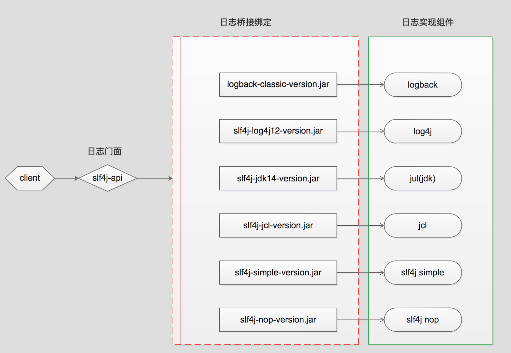
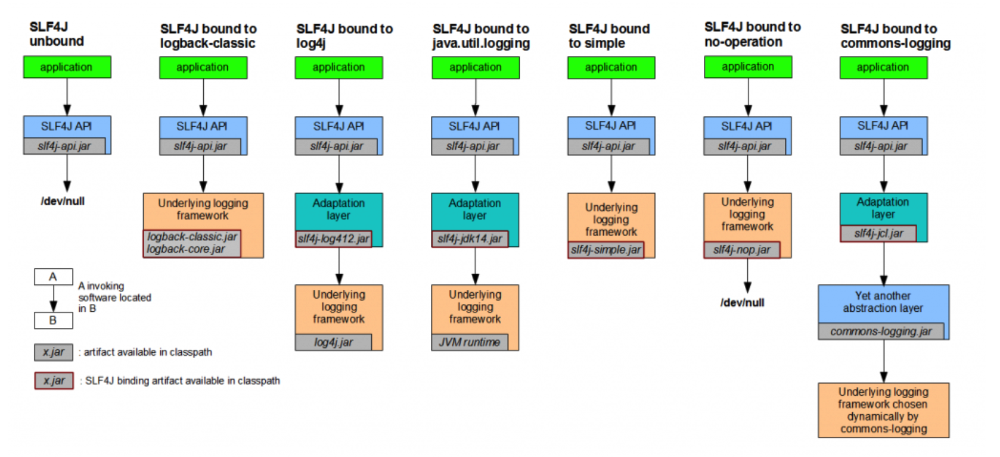
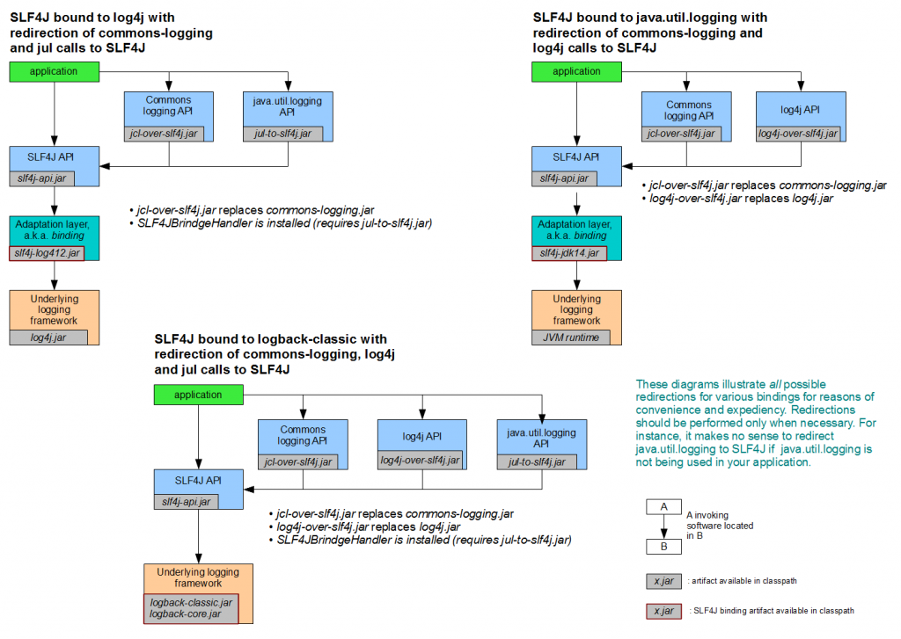

java日志框架的复杂变化。
Java日志概述
对于一个应用程序来说日志记录是必不可少的一部分。线上问题追踪，基于日志的业务逻辑统计分析等都离不日志。java领域存在多种日志框架，目前常用的日志框架包括Log4j 1，Log4j 2，Commons Logging，Slf4j，Logback，Jul。
Java常用日志框架类别
- Log4j Apache Log4j是一个基于Java的日志记录工具。它是由Ceki Gülcü首创的，现在则是Apache软件基金会的一个项目。 Log4j是几种Java日志框架之一。
- Log4j 2 Apache Log4j 2是apache开发的一款Log4j的升级产品。
- Commons Logging Apache基金会所属的项目，是一套Java日志接口，之前叫Jakarta Commons Logging，后更名为Commons Logging。
- Slf4j 类似于Commons Logging，是一套简易Java日志门面，本身并无日志的实现。（Simple Logging Facade for Java，缩写Slf4j）。
- Logback 一套日志组件的实现(Slf4j阵营)。
- Jul (Java Util Logging),自Java1.4以来的官方日志实现。
看了上面的介绍是否会觉得比较混乱，这些日志框架之间有什么异同，都是由谁在维护，在项目中应该如何选择日志框架，应该如何使用? 下文会逐一介绍。
Java常用日志框架历史
1996年早期，欧洲安全电子市场项目组决定编写它自己的程序跟踪API(Tracing API)。经过不断的完善，这个API终于成为一个十分受欢迎的Java日志软件包，即Log4j。后来Log4j成为Apache基金会项目中的一员。
期间Log4j近乎成了Java社区的日志标准。据说Apache基金会还曾经建议Sun引入Log4j到java的标准库中，但Sun拒绝了。
2002年Java1.4发布，Sun推出了自己的日志库JUL(Java Util Logging),其实现基本模仿了Log4j的实现。在JUL出来以前，Log4j就已经成为一项成熟的技术，使得Log4j在选择上占据了一定的优势。
接着，Apache推出了Jakarta Commons Logging，JCL只是定义了一套日志接口(其内部也提供一个Simple Log的简单实现)，支持运行时动态加载日志组件的实现，也就是说，在你应用代码里，只需调用Commons Logging的接口，底层实现可以是Log4j，也可以是Java Util Logging。
后来(2006年)，Ceki Gülcü不适应Apache的工作方式，离开了Apache。然后先后创建了Slf4j(日志门面接口，类似于Commons Logging)和Logback(Slf4j的实现)两个项目，并回瑞典创建了QOS公司，QOS官网上是这样描述Logback的：The Generic，Reliable Fast&Flexible Logging Framework(一个通用，可靠，快速且灵活的日志框架)。
现今，Java日志领域被划分为两大阵营：Commons Logging阵营和Slf4j阵营。
Commons Logging在Apache大树的笼罩下，有很大的用户基数。但有证据表明，形式正在发生变化。2013年底有人分析了GitHub上30000个项目，统计出了最流行的100个Libraries，可以看出Slf4j的发展趋势更好：Apache眼看有被Logback反超的势头，于2012-07重写了Log4j 1.x，成立了新的项目Log4j 2, Log4j 2具有Logback的所有特性。
java常用日志框架关系
- Log4j 2与Log4j 1发生了很大的变化，Log4j 2不兼容Log4j 1。
- Commons Logging和Slf4j是日志门面(门面模式是软件工程中常用的一种软件设计模式，也被称为正面模式、外观模式。它为子系统中的一组接口提供一个统一的高层接口，使得子系统更容易使用)。Log4j和Logback则是具体的日志实现方案。可以简单的理解为接口与接口的实现，调用者只需要关注接口而无需关注具体的实现，做到解耦。
- 比较常用的组合使用方式是Slf4j与Logback组合使用，Commons Logging与Log4j组合使用。
- Logback必须配合Slf4j使用。由于Logback和Slf4j是同一个作者，其兼容性不言而喻。
项目中选择日志框架选择
如果是在一个新的项目中建议使用Slf4j与Logback组合，这样有如下的几个优点。
- Slf4j实现机制决定Slf4j限制较少，使用范围更广。由于Slf4j在编译期间，静态绑定本地的LOG库使得通用性要比Commons Logging要好。
- Logback拥有更好的性能。Logback声称：某些关键操作，比如判定是否记录一条日志语句的操作，其性能得到了显著的提高。这个操作在Logback中需要3纳秒，而在Log4J中则需要30纳秒。LogBack创建记录器（logger）的速度也更快：13毫秒，而在Log4J中需要23毫秒。更重要的是，它获取已存在的记录器只需94纳秒，而Log4J需要2234纳秒，时间减少到了1/23。跟JUL相比的性能提高也是显著的。
- Commons Logging开销更高
# 在使Commons Logging时为了减少构建日志信息的开销，通常的做法是
if(log.isDebugEnabled()){
log.debug("User name： " +
user.getName() + " buy goods id ：" + good.getId());
}
# 在Slf4j阵营，你只需这么做：
log.debug("User name：{} ,buy goods id ：{}", user.getName(),good.getId());
# 也就是说，Slf4j把构建日志的开销放在了它确认需要显示这条日志之后，减少内存和Cup的开销，使用占位符号，代码也更为简洁
- Logback文档免费。Logback的所有文档是全面免费提供的，不象Log4J那样只提供部分免费文档而需要用户去购买付费文档。
Log4j分析
log4j是最古老的版本，学习log4j主要是学习其架构过程。
log4j的需求
为了服务于调试，log4j需要满足以下功能
日志消息除了能打印到控制台， 还可以输出到文件，甚至可以通过邮件发送出去（例如生成环境出错的消息）
日志内容应该可以做格式化， 例如变成纯文本，XML, HTML格式等等
对于不同的Java class，不同的 package ， 还有不同级别的日志，应该可以灵活地输出到不同的文件中。
例如对于com.foo 这个package，所有的日志都输出到 foo.log 文件中
对于com.bar 这个package ，所有文件都输出到bar. log文件中
对于所有的ERROR级别的日志，都输出到 errors.log文件中
能对日志进行分级， 有些日志纯属debug ， 在本机或者测试环境使用， 方便程序员的调试， 生产环境完全不需要。有些日志是描述错误(error)的， 在生产环境下出错的话必须要记录下来，帮助后续的分析。
log4j的设计
首先要记录日志，肯定需要一个类来表达日志的概念，这个类至少应该有两个属性，一个是时间戳，一个是消息本身，把它叫做LoggingEvent吧，记录日志就像记录一个事件嘛。
其次是日志可以输出到不同的地方，控制台、文件、邮件等等， 这个可以抽象一下，不就是写到不同的目的地吗？ 可以叫做LogDestination？
嗯， 还是简单一点，叫做Appender吧， 暗含了可以不断追加日志的意思。
至于第二条的日志内容可以格式化，完全可以比葫芦画瓢， 定义一个Formatter接口去格式化消息。
对了， Appender 应该引用Formatter ，这样以来就可以对LoggingEvent记录格式化以后再发送。
从用户角度想一下， 要想获取日志，必须得先获取个什么东西，这个东西是不是可以称为Logger啊？ 获取Logger的时候要传入类名或者包名！
这样一来，不同的class, package就区分开了， 然后让Logger 和Appender关联，灵活地设置日志的目的地， 并且一个Logger可以拥有多个Appender，同一条日志消息可以输出到多个地方， 完美！
核心类的类图：
再接再厉， 把第四条需求也设计一下，日志要分级，这个简单， 定义一个Priority的类，里边定义5个常量DEBUG, INFO, WARN, ERROR, FATAL， 表示5个不同的级别就OK了。当然这我5个级别有高低之分， DEBUG级别最低， FATAL级别最高。
还可以给Logger增加一些辅助编程的方法，如Logger.debug(….) , Logger.info(…) , Logger.warn(…) 等等， 这样村就可以轻松地输出各种级别的日志了。
“对于所有的ERROR级别的日志，都输出到 errors.log文件中” 类似这样的需求这也好办， 只要在Appender上增加一个属性，就叫做Priority， 如果用户要输出的日志是DEBUG级别， 但是有个FileAppender的Priority是 ERROR级别，那这个日志就不用在这个FileAppender中输出了 ，因为ERROR级别比DEBUG级别高嘛。
同理， 在Logger类上也可以增加一个Priority的属性，用户可以去设置， 如果一个Logger的Priority是ERROR， 而用户调用了这个Logger的debug方法， 那这个debug 的消息也不会输出。
log4j的分析
可以任意扩展Appender接口而影响不到Logger和Formatter， 无论有多少个Logger 都影响不了Appender和Formatter ， 这就是正交。
log4j的延续
如今的日志世界有了很多的选择 ，除了java.util.logging, log4j 之外，还有logback，tinylog 等其他工具。
这么多日志工具，用户如果想切换了怎么办？不想用log4j了，能换到logback吗？
于是提供一个抽象层吧， 用户用这个抽象层的API来写日志， 底层具体用什么日志工具不用关心，这样就可以移植了。
这抽象层就叫做Simple Logging Facade for Java，简称SLF4J。
对于Log4j , JDK logging, tinylog 等工具， 需要一个适配层， 把SLF4J 的API转化成具体工具的调用接口。
由于Logback这个工具也是出自同一个人， 直接实现了SLF4J的API，所以连适配层都不需要了， 用起来速度飞快，效率最高，SLFJ4+Logback 成为了很多人的最爱， 大有超越Apache Common Logging + Log4j 之势。
log4j的简单使用
package uestc.zhangkx;
import org.apache.log4j.Logger;
/**
* log4j的使用
* @author zhangkx
* @version 1.0
* @date 2020/9/6 16:30
*/
public class Test {
private static Logger logger = Logger.getLogger(Test.class);
/**
* @param args
*/
public static void main(String[] args) {
// System.out.println("This is println message.");
// 记录debug级别的信息
logger.debug("This is debug message.");
// 记录info级别的信息
logger.info("This is info message.");
// 记录error级别的信息
logger.error("This is error message.");
}
}
### 设置###
log4j.rootLogger = debug,stdout,D,E
### 输出信息到控制台 ###
log4j.appender.stdout = org.apache.log4j.ConsoleAppender
log4j.appender.stdout.Target = System.out
log4j.appender.stdout.layout = org.apache.log4j.PatternLayout
log4j.appender.stdout.layout.ConversionPattern = [%-5p] %d{yyyy-MM-dd HH:mm:ss,SSS} method:%l%n%m%n
### 输出DEBUG 级别以上的日志到=F://logs/error.log ###
log4j.appender.D = org.apache.log4j.DailyRollingFileAppender
log4j.appender.D.File = F://logs/log.log
log4j.appender.D.Append = true
log4j.appender.D.Threshold = DEBUG
log4j.appender.D.layout = org.apache.log4j.PatternLayout
log4j.appender.D.layout.ConversionPattern = %-d{yyyy-MM-dd HH:mm:ss} [ %t:%r ] - [ %p ] %m%n
### 输出ERROR 级别以上的日志到=E://logs/error.log ###
log4j.appender.E = org.apache.log4j.DailyRollingFileAppender
log4j.appender.E.File =F://logs/error.log
log4j.appender.E.Append = true
log4j.appender.E.Threshold = ERROR
log4j.appender.E.layout = org.apache.log4j.PatternLayout
log4j.appender.E.layout.ConversionPattern = %-d{yyyy-MM-dd HH:mm:ss} [ %t:%r ] - [ %p ] %m%n
Commons Logging分析
Commons Logging实现机制
Commons Logging是通过动态查找机制，在程序运行时，使用自己的ClassLoader寻找和载入本地具体的实现。详细策略可以查看commons-logging-*.jar包中的org.apache.commons.logging.impl.LogFactoryImpl.java文件。由于Osgi不同的插件使用独立的ClassLoader，Osgi的这种机制保证了插件互相独立, 其机制限制了Commons Logging在Osgi中的正常使用。
Slf4j分析
Slf4j实现机制
Slf4j在编译期间，静态绑定本地的Log库，因此可以在Osgi中正常使用。它是通过查找类路径下org.slf4j.impl.StaticLoggerBinder，然后在taticLoggerBinder中进行绑定。
Slf4j的地位
Slf4j与其它日志组件的关系说明
- Slf4j的设计思想比较简洁，使用了Facade设计模式，Slf4j本身只提供了一个slf4j-api-version.jar包，这个jar中主要是日志的抽象接口，jar中本身并没有对抽象出来的接口做实现。
- 对于不同的日志实现方案(例如Logback，Log4j…)，封装出不同的桥接组件(例如logback-classic-version.jar，slf4j-log4j12-version.jar)，这样使用过程中可以灵活的选取自己项目里的日志实现。
Slf4j与其它日志组件调用关系图

Slf4j与其他各种日志组件的桥接说明
| jar包名 | 说明 |
|---|---|
| slf4j-log4j12-1.7.13.jar | Log4j1.2版本的桥接器，你需要将Log4j.jar加入Classpath。 |
| slf4j-jdk14-1.7.13.jar | java.util.logging的桥接器，Jdk原生日志框架。 |
| slf4j-nop-1.7.13.jar | NOP桥接器，默默丢弃一切日志。 |
| slf4j-simple-1.7.13.jar | 一个简单实现的桥接器，该实现输出所有事件到System.err. 只有Info以及高于该级别的消息被打印，在小型应用中它也许是有用的。 |
| slf4j-jcl-1.7.13.jar | Jakarta Commons Logging 的桥接器. 这个桥接器将Slf4j所有日志委派给Jcl。 |
| logback-classic-1.0.13.jar(requires logback-core-1.0.13.jar) | Slf4j的原生实现，Logback直接实现了Slf4j的接口，因此使用Slf4j与Logback的结合使用也意味更小的内存与计算开销 |
- 具体的接入方式参见下图

Slf4j源码分析
slf4j-api-version.jar中几个核心类与接口
| 类与接口 | 用途 |
|---|---|
| org.slf4j.LoggerFactory(class) | 给调用方提供的创建Logger的工厂类，在编译时绑定具体的日志实现组件 |
| org.slf4j.Logger(interface) | 给调用方提供的日志记录抽象方法，例如debug(String msg),info(String msg)等方法 |
| org.slf4j.ILoggerFactory(interface) | 获取的Logger的工厂接口，具体的日志组件实现此接口 |
| org.slf4j.helpers.NOPLogger(class) | 对org.slf4j.Logger接口的一个没有任何操作的实现，也是Slf4j的默认日志实现 |
| org.slf4j.impl.StaticLoggerBinder(class) | 与具体的日志实现组件实现的桥接类，具体的日志实现组件需要定义org.slf4j.impl包，并在org.slf4j.impl包下提供此类，注意在slf4j-api-version.jar中不存在org.slf4j.impl.StaticLoggerBinder，在源码包slf4j-api-version-source.jar中才存在此类 |
Slf4j调用过程源码分析，只加入slf4j-api-version.jar，不加入任何实现包
示例代码
pom核心配置如下
<dependencies>
<!--只有slf4j-api依赖-->
<dependency>
<groupId>org.slf4j</groupId>
<artifactId>slf4j-api</artifactId>
<version>1.7.13</version>
</dependency>
</dependencies>
程序入口类如下
源码追踪分析
1)调用LoggerFactory的getLogger()方法创建Logger
2)调用LoggerFactory的getILoggerFactory方法来创建ILoggerFactory
3)调用LoggerFactory的performInitialization方法来进行初始化
4)调用LoggerFactory的bind()方法
5)调用LoggerFactory的findPossibleStaticLoggerBinderPathSet()方法获取StaticLoggerBinderPath集合
6)调用LoggerFactory的reportMultipleBindingAmbiguity()方法，记录绑定的StaticLoggerBinder信息
7)LoggerFactory的reportMultipleBindingAmbiguity()方法
8)LoggerFactory的bind()方法找不到StaticLoggerBinder，抛出NoClassDefFoundError异常
9)LoggerFactory的bind()方法捕获NoClassDefFoundError异常，匹配到StaticLoggerBinder关键词记录信息到控制台
10)LoggerFactory的performInitialization()方法内部调用bind()方法结束
11)LoggerFactory的getLogger()方法内部getILoggerFactory()方法调用完成，创建出NOPLoggerFactory，然后由NOPLoggerFactory调用内部的getLogger()方法，创建出NOPLogger
12)App类内部的logger实际为NOPLogger,调用logger.info()方法实际调用的是NOPLogger的info方法
Slf4j调用过程源码分析，加入slf4j-api-version.jar，与Logback组件
Slf4j作为门面采用Logback作为实现或者采用其它上面提到过的组件作为实现类似，这里只分析采用Logback组件作为实现
示例代码
pom核心配置如下
<dependencies>
<dependency>
<groupId>org.slf4j</groupId>
<artifactId>slf4j-api</artifactId>
<version>1.7.13</version>
</dependency>
<!--logback-classic依赖logback-core，会自动级联引入-->
<dependency>
<groupId>ch.qos.logback</groupId>
<artifactId>logback-classic</artifactId>
<version>1.2.3</version>
</dependency>
</dependencies>
程序入口类同上
源码追踪分析
- 1)2)3)4)同上
- 5)调用LoggerFactory的findPossibleStaticLoggerBinderPathSet()方法获取StaticLoggerBinderPath集合
- 6)调用LoggerFactory的bind()方法的staticLoggerBinderPathSet集合对象赋值
- 7)在LoggerFactory的bind()方法中调用loback包下的StaticLoggerBinder创建单例对象
- 8)在LoggerFactory的bind()方法中调用reportActualBinding()记录日志加载信息
- 9)LoggerFactory中INITIALIZATION_STATE的值为SUCCESSFUL_INITIALIZATION，调用StaticLoggerBinder的单例对象获取ILoggerFactory
- 10)此时LoggerFactory中的getLogger()方法中获取到的ILoggerFactory实际上是logback jar下的LoggerContext
- 11)此时LoggerFactory调用getLogger()方法获取到的Logger实际上是logback jar下的Logger
Slf4j调用过程源码分析，加入slf4j-api-version.jar，同时加入多种日志实现组件
在项目中如果用slf4j-api作为日志门面，有多个日志实现组件同时存在，例如同时存在Logback，slf4j-log4j12，slf4j-jdk14，slf4j-jcl四种实现，则在项目实际运行中，Slf4j的绑定选择绑定方式将有Jvm确定，并且是随机的，这样会和预期不符，实际使用过程中需要避免这种情况。
示例代码
pom核心配置如下
<dependencies>
<dependency>
<groupId>junit</groupId>
<artifactId>junit</artifactId>
<version>4.11</version>
</dependency>
<dependency>
<groupId>org.slf4j</groupId>
<artifactId>slf4j-log4j12</artifactId>
<version>1.7.25</version>
</dependency>
<dependency>
<groupId>ch.qos.logback</groupId>
<artifactId>logback-classic</artifactId>
<version>1.2.3</version>
</dependency>
<dependency>
<groupId>org.slf4j</groupId>
<artifactId>slf4j-jdk14</artifactId>
<version>1.7.25</version>
</dependency>
<dependency>
<groupId>org.slf4j</groupId>
<artifactId>slf4j-jcl</artifactId>
<version>1.7.25</version>
</dependency>
</dependencies>
程序入口类同上
源码追踪分析
- 基本步骤同上，这里只追踪主要不同点
- 1)追踪LoggerFactory的bind()方法内部调用findPossibleStaticLoggerBinderPathSet()方法后，从classpath下4个jar包内找到StaticLoggerBinder
- 2)此时LoggerFactory的bind()方法内部调用reportMultipleBindingAmbiguity()方法，给出警告信息classpath下同时存在多个StaticLoggerBinder,JVM会随机选择一个StaticLoggerBinder
使用Slf4时如何桥接遗留的api
在实际环境中我们经常会遇到不同的组件使用的日志框架不同的情况，例如Spring Framework使用的是日志组件是Commons Logging，XSocket依赖的则是Java Util Logging。当我们在同一项目中使用不同的组件时应该如果解决不同组件依赖的日志组件不一致的情况呢？现在我们需要统一日志方案，统一使用Slf4j，把他们的日志输出重定向到Slf4j，然后Slf4j又会根据绑定器把日志交给具体的日志实现工具。Slf4j带有几个桥接模块，可以重定向Log4j，JCL和java.util.logging中的Api到Slf4j。
遗留的api桥接方案
| jar包名 | 作用 |
|---|---|
| log4j-over-slf4j-version.jar | 将Log4j重定向到Slf4j |
| jcl-over-slf4j-version.jar | 将Commons Logging里的Simple Logger重定向到slf4j |
| jul-to-slf4j-version.jar | 将Java Util Logging重定向到Slf4j |
桥接方式参见下图

使用Slf4j桥接注意事项
- 在使用Slf4j桥接时要注意避免形成死循环，在项目依赖的jar包中不要存在以下情况。
| 多个日志jar包形成死循环的条件 | 产生原因 |
|---|---|
| log4j-over-slf4j.jar和slf4j-log4j12.jar同时存在 | 由于slf4j-log4j12.jar的存在会将所有日志调用委托给log4j。但由于同时由于log4j-over-slf4j.jar的存在，会将所有对log4j api的调用委托给相应等值的slf4j,所以log4j-over-slf4j.jar和slf4j-log4j12.jar同时存在会形成死循环 |
| jul-to-slf4j.jar和slf4j-jdk14.jar同时存在 | 由于slf4j-jdk14.jar的存在会将所有日志调用委托给jdk的log。但由于同时jul-to-slf4j.jar的存在，会将所有对jul api的调用委托给相应等值的slf4j，所以jul-to-slf4j.jar和slf4j-jdk14.jar同时存在会形成死循环 |
遗留api桥接死循环源码分析源码
这里以项目中集成log4j-over-slf4j与slf4j-log4j12为例，其它组合形成死循环原理相类似。
示例代码
程序入口类同上
源码追踪分析
基本步骤同上，调用链路LoggerFactory.getLogger()>LoggerFactory.getILoggerFactory()> LoggerFactory.performInitialization()>LoggerFactory.bind()
- 1)LoggerFactory.bind()方法内部调用StaticLoggerBinder.getSingleton()获取StaticLoggerBinder实例
- 2)StaticLoggerBinder调用构造方法内部调用Log4jLoggerFactory构造方法创建ILoggerFactory
- 3)Log4jLoggerFactory加载内部static代码块，校验出classpath下存在org.apache.log4j.Log4jLoggerFactory，抛出异常
排除掉项目中依赖的第三方包的日志依赖
在实际使用过程中，项目会根据需要引入一些第三方组件，例如常用的Spring，而Spring本身的日志实现使用了Commons Logging，我们又想使用Slf4j+Loback组合，这时候需要在项目中将Commons Logging排除掉，通常会用到以下3种方案，3种方案各有利弊，可以根据项目的实际情况选择最适合自己项目的解决方案。
方案一 采用maven的exclusion方案
<dependency>
<groupId>org.springframework</groupId>
<artifactId>spring-core</artifactId>
<exclusions>
<exclusion>
<groupId>commons-logging</groupId>
<artifactId>commons-logging</artifactId>
</exclusion>
</exclusions>
<version>${springframework.version}</version>
</dependency>
- 这种方案优点是exclusion是maven原生提供的，不足之处是如果有多个组件都依赖了commons-logging，则需要在很多处增加，使用起来不太方便
方案二 在maven声明commons-logging的scope为provided
<dependency>
<groupId>commons-logging</groupId>
<artifactId>commons-logging</artifactId>
<version>1.1.1</version>
<scope>provided</scope>
</dependency>
<dependency>
<groupId>org.slf4j</groupId>
<artifactId>jcl-over-slf4j</artifactId>
<version>1.8.0-beta2</version>
</dependency>
- 这种方案在调试代码时还是有可能导致IDE将commons-logging放置在classpath下，从而导致程序运行时出现异常
方案三 在maven私服中增加类似于99.0-does-not-exist这种虚拟的版本号
<dependency>
<groupId>commons-logging</groupId>
<artifactId>commons-logging</artifactId>
<version>99.0-does-not-exist</version>
</dependency>
<dependency>
<groupId>org.slf4j</groupId>
<artifactId>jcl-over-slf4j</artifactId>
<version>1.8.0-beta2</version>
</dependency>
- 这种方案好处是声明方式比较简单，用IDE调试代码时也不会出现问题，不足之处是99.0-does-not-exist这种版本是maven中央仓库中是不存在的，需要发布到自己的maven私服中。
总结
由于历史原因JDK自身提供的Log组件出现的较晚，导致Jdk提供Log组件时第三方社区的日志组件已经比较稳定成熟。经过多年的发展Slf4j+Logback与组合，Commons Logging与Log4j组合两大阵营已经基本成为了Java项目开发的标准，建议在新的项目开发中从这两种方案中选择适合自己项目的组合方案。